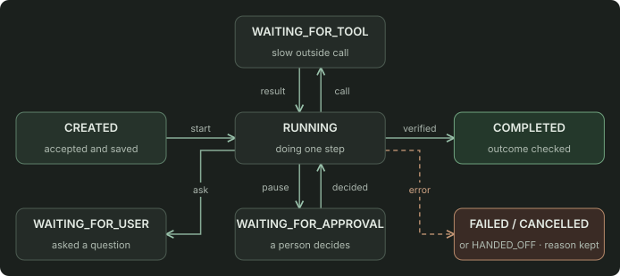

Task states, progress, and long-running tasks
- Why should an agent have a state machine?
- When should you use synchronous versus asynchronous execution?
- How should an agent provide progress during long tasks?
In short. Give each task a fixed set of states (created, running, waiting, completed, failed, cancelled, or handed off) and allowed moves between them, saved in a database. Then a crashed worker can resume the task and users see accurate status. Quick tasks can answer right away; long ones return a task ID and report progress separately.
States and allowed moves
This is called a state machine. It blocks impossible jumps: a task can't go from waiting-for-approval to completed without running the approved step. Save each move before the worker lets go of the task, so any worker can pick it up later.
Task states
Open figure
Answer now, or return a task ID?
Choose by how long the task takes and whether it waits on people.
Quick vs. long tasks
| Quick task (seconds) | Long task (minutes to days) | |
|---|---|---|
| Example | “What's the status of order 42?” | Investigate a billing mismatch that needs approval |
| The request returns | The answer | “Accepted” plus a task ID |
| Then the client | Is done | Checks status or subscribes to updates, and can cancel |
| Survives a closed browser | Not needed | Yes: the state is in the database |
For progress, report milestones from the task record ("checked 3 of 5 systems", "waiting for the billing team's approval"), not a running commentary from the model. Keep status separate from results: "approval requested" is not "refund issued".